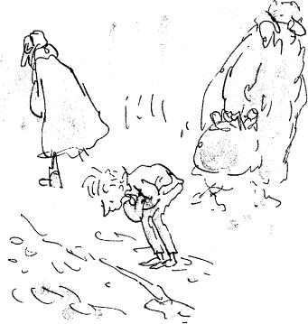

During the next two weeks, the weather turned very cold. First came the snow. It began very suddenly one morning just as Charlie Bucket was getting dressed for school. Standing by the window, he saw the huge flakes drifting slowly down out of an icy sky that was the colour of steel.
By evening, it lay four feet deep around the tiny house, and Mr Bucket had to dig a path from the front door to the road.
After the snow, there came a freezing gale that blew for days and days without stopping. And oh, how bitter cold it was! Everything that Charlie touched seemed to be made of ice, and each time he stepped outside the door, the wind was like a knife on his cheek.
Inside the house, little jets of freezing air came rushing in through the sides of the windows and under the doors, and there was no place to go to escape them. The four old ones lay silent and huddled in their bed, trying to keep the cold out of their bones. The excitement over the Golden Tickets had long since been forgotten. Nobody in the family gave a thought now to anything except the two vital problems of trying to keep warm and trying to get enough to eat.
There is something about very cold weather that gives one an enormous appetite. Most of us find ourselves beginning to crave rich steaming stews and hot apple pies and all kinds of delicious warming dishes; and because we are all a great deal luckier than we realize, we usually get what we want – or near enough. But Charlie Bucket never got what he wanted because the family couldn’t afford it, and as the cold weather went on and on, he became ravenously and desperately hungry. Both bars of chocolate, the birthday one and the one Grandpa Joe had bought, had long since been nibbled away, and all he got now were those thin, cabbagy meals three times a day.
Then all at once, the meals became even thinner.
The reason for this was that the toothpaste factory, the place where Mr Bucket worked, suddenly went bust and had to close down. Quickly, Mr Bucket tried to get another job. But he had no luck. In the end, the only way in which he managed to earn a few pennies was by shovelling snow in the streets. But it wasn’t enough to buy even a quarter of the food that seven people needed. The situation became desperate. Breakfast was a single slice of bread for each person now, and lunch was maybe half a boiled potato.
Slowly but surely, everybody in the house began to starve.
And every day, little Charlie Bucket, trudging through the snow on his way to school, would have to pass Mr Willy Wonka’s giant chocolate factory. And every day, as he came near to it, he would lift his small pointed nose high in the air and sniff the wonderful sweet smell of melting chocolate. Sometimes, he would stand motionless outside the gates for several minutes on end, taking deep swallowing breaths as though he were trying to eat the smell itself.
‘That child,’ said Grandpa Joe, poking his head up from under the blanket one icy morning, ‘that child has got to have more food. It doesn’t matter about us. We’re too old to bother with. But a growing boy! He can’t go on like this! He’s beginning to look like a skeleton!’
‘What can one do?’ murmured Grandma Josephine miserably. ‘He refuses to take any of ours. I hear his mother tried to slip her own piece of bread on to his plate at breakfast this morning, but he wouldn’t touch it. He made her take it back.’
‘He’s a fine little fellow,’ said Grandpa George. ‘He deserves better than this.’
The cruel weather went on and on.
And every day, Charlie Bucket grew thinner and thinner. His face became frighteningly white and pinched. The skin was drawn so tightly over the cheeks that you could see the shapes of the bones underneath. It seemed doubtful whether he could go on much longer like this without becoming dangerously ill.
And now, very calmly, with that curious wisdom that seems to come so often to small children in times of hardship, he began to make little changes here and there in some of the things that he did, so as to save his strength. In the mornings, he left the house ten minutes earlier so that he could walk slowly to school, without ever having to run. He sat quietly in the classroom during break, resting himself, while the others rushed outdoors and threw snowballs and wrestled in the snow. Everything he did now, he did slowly and carefully, to prevent exhaustion.
Then one afternoon, walking back home with the icy wind in his face (and incidentally feeling hungrier than he had ever felt before), his eye was caught suddenly by something silvery lying in the gutter, in the snow. Charlie stepped off the kerb and bent down to examine it. Part of it was buried under the snow, but he saw at once what it was.
It was a fifty-pence piece!
Quickly he looked around him.
Had somebody just dropped it?
No – that was impossible because of the way part of it was buried.
Several people went hurrying past him on the pavement, their chins sunk deep in the collars of their coats, their feet crunching in the snow. None of them was searching for any money; none of them was taking the slightest notice of the small boy crouching in the gutter.
Then was it his, this fifty pence?
Could he have it?
Carefully, Charlie pulled it out from under the snow. It was damp and dirty, but otherwise perfect.
A WHOLE fifty pence!
He held it tightly between his shivering fingers, gazing down at it. It meant one thing to him at that moment, only one thing. It meant FOOD.
Automatically, Charlie turned and began moving towards the nearest shop. It was only ten paces away… it was a newspaper and stationery shop, the kind that sells almost everything, including sweets and cigars… and what he would do, he whispered quickly to himself… he would buy one luscious bar of chocolate and eat it all up, every bit of it, right then and there… and the rest of the money he would take straight back home and give to his mother.